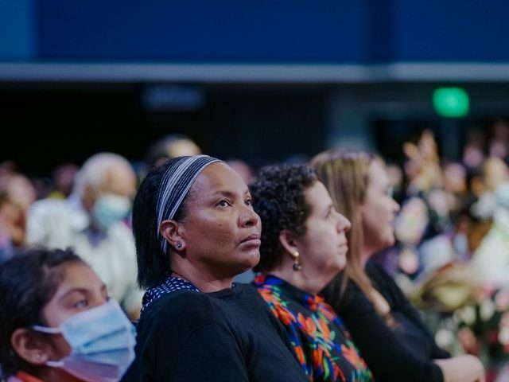

VOCABULARY · WORD UP 單字複習 UNIT 3
A-III．A 開頭（三）
WORD UP「A-III」的 38 個字（appear 到 away）。紅色＝要複習，藍色標籤＝WORD UP 標熟記、還要在這裡考對。
共 38 個單字．點 🔊 聽發音
1appearv.
出現；看起來
disappear 消失
A rainbow appeared after the rain.雨後出現了一道彩虹。
2appearancen.
外表；出現
appear 的名詞
Don't judge people by their appearance.不要以貌取人。

3applen.
蘋果
an apple
I eat an apple every morning.我每天早上吃一顆蘋果。
4applyv.
申請；應用
apply for + 職位／學校
My sister applied for a job at the bank.我姊姊應徵了銀行的工作。
5appreciatev.
感激；欣賞
I appreciate it. 我很感激
I really appreciate your help.我真的很感謝你的幫忙。
6Apriln.
四月
月份第一個字母大寫
My birthday is in April.我的生日在四月。
7arev.
是（you／we／they 的 be 動詞）
you are / we are / they are
They are my classmates.他們是我的同學。
8arean.
地區；面積
There are many parks in this area.這個地區有很多公園。
9arguev.
爭吵；爭論
argue with + 人
The brothers often argue about small things.那對兄弟常為小事吵架。
10armn.
手臂
arms 也有「武器」的意思
He broke his arm playing basketball.他打籃球摔斷了手臂。
11armchairn.
扶手椅
Grandpa is reading in the armchair.爺爺坐在扶手椅上看書。
12armyn.
軍隊；陸軍
My uncle served in the army.我叔叔當過兵。
13aroundprep./adv.
在…周圍；大約
around + 時間／數字＝大約
We sat around the table.我們圍著桌子坐。
14arrangev.
安排；整理
Mom arranged the flowers in a vase.媽媽把花插進花瓶裡。
15arrestv./n.
逮捕
The police arrested the thief.警察逮捕了那個小偷。
16arrivev.
到達
arrive at + 小地點／arrive in + 大地點
We arrived in Tainan at noon.我們中午到達台南。
17artn.
藝術；美術
art class 美術課
Art is my favorite subject.美術是我最喜歡的科目。
18articlen.
文章；冠詞
a／an／the 是冠詞
I read an article about whales.我讀了一篇關於鯨魚的文章。
19artistn.
藝術家；畫家
The artist painted a picture of the sea.那位畫家畫了一幅海的畫。

20Asian.
亞洲
Taiwan is in Asia.台灣在亞洲。
21Asianadj./n.
亞洲的；亞洲人
Rice is an important Asian food.米飯是很重要的亞洲食物。
22askv.
問；要求
ask + 人 + to V 要求某人做…
May I ask you a question?我可以問你一個問題嗎？
23asleepadj.
睡著的
fall asleep 睡著；放在 be 動詞後面
The baby is asleep.寶寶睡著了。

24assistantn.
助理
The doctor's assistant called my name.醫生的助理叫了我的名字。
25assumev.
以為；假定
I assumed you were at home.我以為你在家。
26attackv./n.
攻擊
The dog attacked the cat.那隻狗攻擊了貓。
27attendv.
參加；出席
attend + 活動（不加 to）
All students must attend the meeting.所有學生都必須參加這個會議。
28attentionn.
注意
pay attention to + 名詞
Please pay attention to the teacher.請注意聽老師說。

29audiencen.
觀眾；聽眾
指一整群人
The audience clapped loudly.觀眾大聲鼓掌。
30Augustn.
八月
Summer vacation ends in August.暑假在八月結束。
31auntn.
阿姨；姑姑；嬸嬸
uncle 叔叔、舅舅
My aunt lives in Kaohsiung.我阿姨住在高雄。
32Australian.
澳洲
Kangaroos live in Australia.袋鼠住在澳洲。
33Australianadj./n.
澳洲的；澳洲人
Our English teacher is Australian.我們的英文老師是澳洲人。
34autumnn.
秋天
= fall（美式）
Leaves turn red in autumn.秋天葉子會變紅。
35availableadj.
可用的；有空的
Is this seat available?這個位子有人坐嗎？
36avoidv.
避免
avoid + V-ing
Try to avoid eating too much sugar.盡量避免吃太多糖。
37awareadj.
知道的；察覺的
be aware of + 名詞
Are you aware of the danger?你知道這有危險嗎？
38awayadv.
離開；遠離
go away 走開／far away 很遠
The bird flew away.那隻鳥飛走了。
FOCUS
常考片語
| 說法 | 中文 | 例子 |
|---|---|---|
| arrive in / arrive at | 到達（大地點／小地點） | arrive in Taipei ／ arrive at the station |
| pay attention to | 注意 | pay attention to the teacher |
| apply for | 申請、應徵 | apply for a job |
| be aware of | 知道、察覺 | be aware of the problem |
| avoid + V-ing | 避免做… | avoid eating junk food |
| argue with + 人 | 和某人吵架 | argue with my brother |
attend 後面直接接活動：attend the meeting（不說 attend to the meeting）。
FOCUS
一家人的字
| 字 | 用法 | 例子 |
|---|---|---|
| appear / appearance | 動詞 ／ 名詞 | appear on TV ／ his appearance |
| art / artist | 藝術 ／ 藝術家 | art class ／ a famous artist |
| Asia / Asian | 亞洲 ／ 亞洲的、亞洲人 | in Asia ／ Asian food |
| Australia / Australian | 澳洲 ／ 澳洲的、澳洲人 | in Australia ／ an Australian |
| asleep / sleep | 睡著的（形容詞）／ 睡覺（動詞） | He is asleep. ／ He sleeps late. |